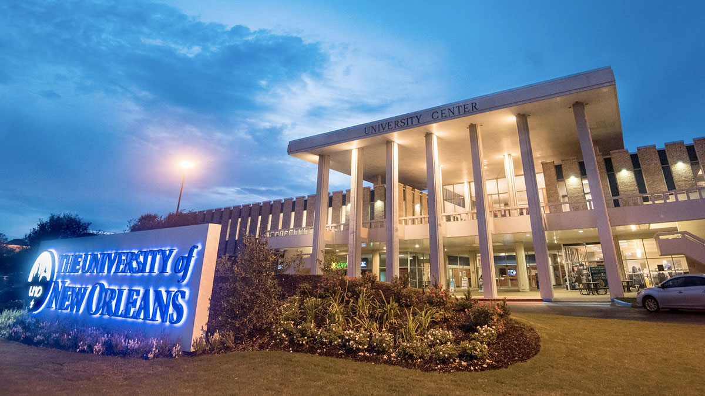

The University of New Orleans
Contents
1. History
State Senator Theodore M. Hickey of New Orleans in 1956 authored the act which established the University of New Orleans. At the time New Orleans was the largest metropolitan area in the United States without a public university though it had several private universities, such as Tulane (which was originally a state-supported university before being privatized in 1884), Loyola, and Dillard. The institution was a branch of Louisiana State University,
and as such was originally named Louisiana State University in New Orleans or LSUNO. The UNO University Ballroom was named in Hickey's honor late in 2014, more than two decades after his death.The university was built on the New Orleans Lakefront when the United States Navy relocated Naval Air Station New Orleans. The Orleans Levee Board leased the closed base to the LSU Board of Supervisors. The renovation went quicker than expected. LSUNO opened for classes in 1958, two years ahead of schedule. It was the first racially integrated
public university in the South. For its first five years, it was reckoned as an offsite department of the main campus in Baton Rouge, and as such its chief administrative officer was originally called a dean (1958–1961), then a vice president in charge (1961–1962). In 1962, the LSU System of Higher Education was established, and LSUNO became a separate campus in that system. To signify that it was now a co-equal institution with LSU, its chief executive's title was changed from "vice president in charge" to "chancellor." After a
decade of growth, the LSU Board of Supervisors approved a name change to the current University of New Orleans. Nearly fifty years later, in 2011, the University of New Orleans was transferred from LSU to the University of Louisiana system, and its chief executive's title was changed to "president."
Hurricane Katrina
On August 29, 2005, the university suffered damage due to Hurricane Katrina. The main campus is on relatively high ground and the damage was caused mostly by winds, rain-driven-water, and human activity during the storm. The university was used as an evacuation point and staging area by the National Guard. A levee breach on the London Avenue Canal occurred just a few blocks south of the main campus and caused the flooding of the first floor of the Bienville Hall dormitories, the Lafitte Village couples apartments, and the Engineering Building.
UNO was the first of the large, damaged universities in New Orleans to re-open, albeit virtually, by using web-based courses starting in October 2005.[9] The university was able to offer classes in the fall semester immediately following Hurricane Katrina at satellite campuses; the main campus re-opened in December 2005.
Hurricane Katrina reduced enrollments at all colleges in New Orleans, but the University of New Orleans was particularly hard hit. This echoed the damage to New Orleans as a whole, since UNO serves as a leader in educating students from New Orleans. Since the hurricane, the student enrollment is on a steady increase toward pre-Katrina numbers.
Chief Executives
- "Homer L. Hitt (dean, 1958–59; VP in charge, 1959–1963, chancellor, 1963–1980)"
- "Leon J. Richelle (chancellor, 1980–1983)"
- "Cooper Mackin (chancellor, 1983–1987; acting to 1984)"
- "Gregory M. St. L. O'Brien (chancellor, 1987–2003)"
- "Timothy P. Ryan (chancellor, 2003–2010)"
- "Joe King (acting chancellor, 2010–2012)"
- "Peter J. Fos (president, 2012–2016)"
- "John W. Nicklow (president, 2016–present)"